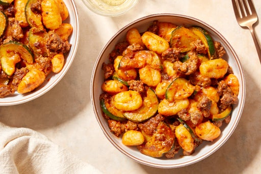

Spicy Beef & Gnocchi
Plump gnocchi, ground beef, and tender zucchini get a delicious kick from Calabrian chile paste, a specialty ingredient from southern Italy known for its irresistibly sweet-hot flavor.
Plump gnocchi, ground beef, and tender zucchini get a delicious kick from Calabrian chile paste, a specialty ingredient from southern Italy known for its irresistibly sweet-hot flavor.
Pad Thai is stir-fry dish made with rice noodles, shrimp, chicken, or tofu, peanuts, a scrambled egg and bean sprouts. The ingredients are sautéed together in a wok and tossed in a delicious pad thai sauce.

Shepherd's Pie, Cottage Pie, or Hachis Parmentier is a meat pie consisting of cooked minced meat topped with mashed potato. This dish originated from the United Kingdom, and is traditionally made with lamb or mutton.
This recipe is here to blow up everything you think you know about meatballs. All dramatics aside, these meatballs are truly game-changing thanks to a certain onomatopoeic sauce.